The data-sources article documents how PyPSA-Eur turns land eligibility and the weather cutout into a flat potential and one blended profile per region — and the optimistic asymmetry that follows.
PyPSA-Eur’s capacity factors are untouched here and ship with the model replica. That approach uses ERA5 for both the potential and the hourly variability of the resource. The potential, however, depends on the weather year: the profiles are 2025’s, and the horizon series reuses them to 2050, so they need not represent the long-term potential assumed in multi-decade analysis. Additional estimates can complement the reanalysis and refine it. This article uses Global Wind Atlas estimates (v4, 250 m) as a benchmark of long-term potential, while the same ERA5 data remains the source of hourly variability: wind speeds are shifted along the power curve until each quality level’s long-term mean matches the atlas. The difference is systematic — the atlas reads above the ERA5 mean in every region, median ratio 0.63.
The layer is built in data-raw/cf-workflow/: a Global
Wind Atlas (250 m) classification of the eligible land, a low-wind
filter whose threshold is chosen from the data, per-cell hourly capacity
factors (same atlite assumptions as PyPSA) clustered per country, and
four technology tiers at full NUTS3 resolution. The installable area is
stored explicitly (installable_pieces_*.gpkg): a location
counts only where the grid cell, its region, and the carved atlas band
overlap. It is not part of the eleven shipped models — it arrives with
the repository update and ships separately (revised assumptions). The
solar half is in the solar
article.
The wind atlas layer
The Global Wind Atlas resolves the resource at 250 m — a thousand times finer than the cutout — so it can say how much of each cell’s eligible land clears a quality bar, not just the cell’s average. Carved into quality bands, the atlas keeps that structure: ridgelines, valleys and coastal gradients that any cell average erases.
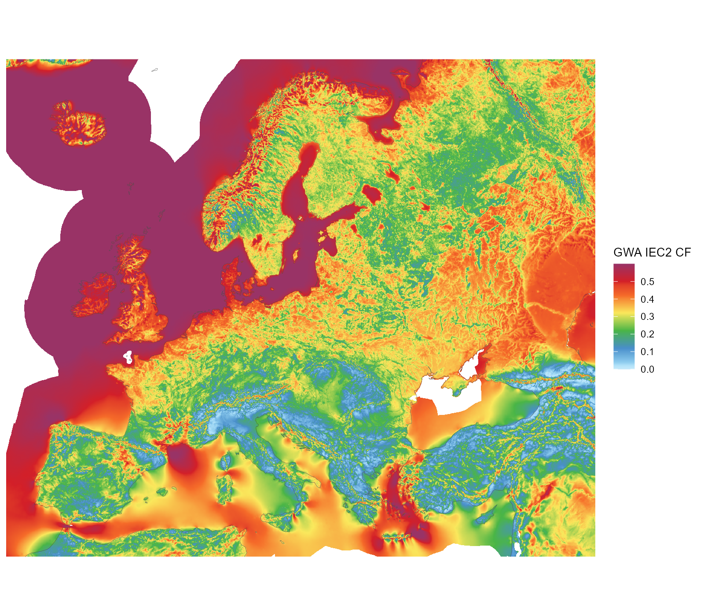
The original Global Wind Atlas IEC2 capacity factor (250 m raster, shown at ~2 km), unclustered — all downloaded atlas coverage in the map window. Land and sea; the land-eligibility screen applies downstream.
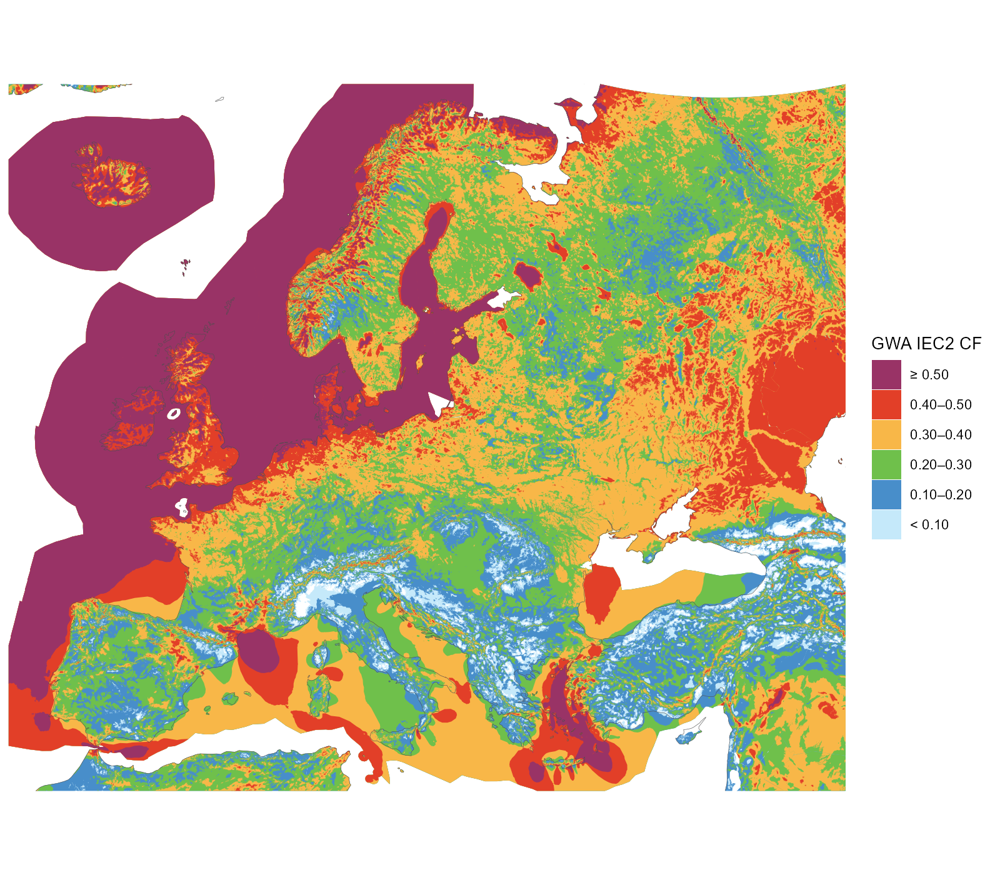
The atlas carved into the six display classes aligned with the technology tiers (band polygons generalized for display) — all available atlas data in the window, beyond the model domain (the eastern neighbours window-cropped). These carved shapes are what filters locations precisely, beyond cell averages.
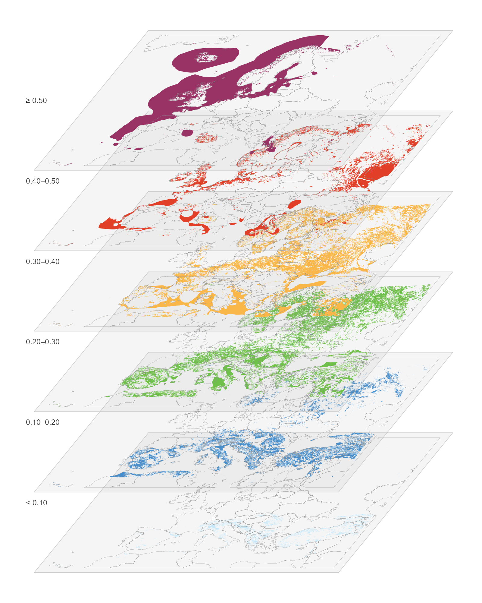
The quality classes as a multilayer stack: every exclusive class on its own level (the top level alone is open-ended), lowest at the bottom, country contours for orientation, same colours as the flat categorical map.
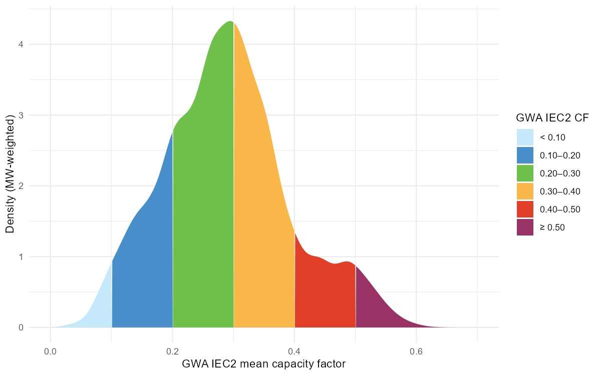
Where the eligible capacity sits on the quality scale: MW-weighted density over the GWA IEC2 mean capacity factor, segmented by the six display classes.
The gap between the two instruments is systematic. Region by region, the atlas reads higher than the ERA5 mean everywhere — median ratio 0.63 across the 41 nodes — and the difference is largest exactly where the wind resource is best.
Splitting the atlas side by AF tier makes the same point tier by tier: against the one blended profile a region offers, the conditional atlas mean of its 0.20–0.30 land runs about +0.09 higher on average, its 0.30–0.40 land +0.17, its 0.40–0.50 land +0.26, and its best (≥ 0.50) land +0.35 – the blend prices a region’s best sites at its average. The few small negatives in the two lowest bands are the mirror image: there the blend, weighted toward the good cells, sits above what the poor land can actually deliver.
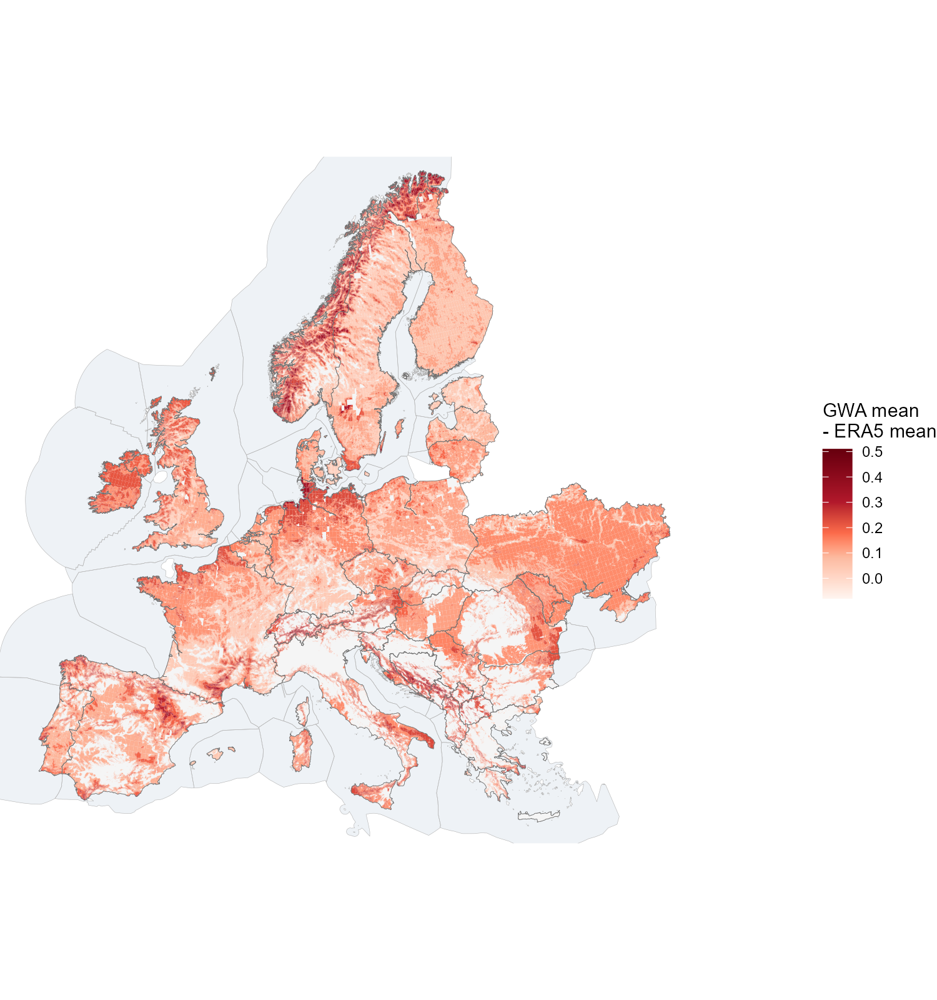
The atlas-vs-ERA5 gap painted on the carved installable land: each piece coloured by the conditional Global Wind Atlas mean of its AF tier band minus the region’s ERA5 mean (the one blended profile each 41-node region gets). The tier bands are spatially exclusive, so one map carries all four tiers — the best bands glow strongest exactly where the resource is best (tiers holding less than 10 km2 in a region are dropped).
One cell, many sites
A single 0.3° weather cell is not one site. At the atlas’s 250 m, the same cell can hold several quality levels side by side — and with them, completely different capacity factors and yields:
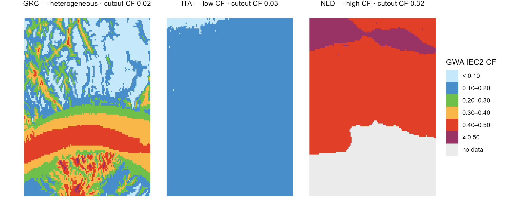
Three weather cells at the atlas’s 250 m in the six tier-aligned classes (grey = no data, e.g. water); each strip names the cell’s whole-cell cutout CF — one low-CF cell, one high-CF cell, one heterogeneous.
The power-curve correction makes each level explicit. For every
quality level in a cell, the hourly wind speeds are shifted along the
power curve until the level’s long-term mean matches the atlas
(merra2ools::calibrate_wind_speed()): the S-shape moves the
steep mid-range most, leaves calms at zero and saturates at rated
output. The curve is an aggregate curve
(merra2ools::fWindParkCurve()): the single-machine curve
convolved with the spread of wind speeds seen across many turbines — the
multi-turbine approach of Nørgaard & Holttinen (2004). The default
parameterization used here is Staffell & Pfenninger’s (2016) fleet
form (σ = 0.2·v + 0.6, calibrated so simulated national fleets reproduce
historic output) — fitting, since each cluster series stands for
dispersed sites across a region. The choice of curve is the modeller’s:
method = "NH2004" gives the single-park curve (σ from
turbulence intensity), "NH2004_storm" adds the
manufacturers’ gradual storm-control ramp, and any custom base curve can
be passed through WPC. The heterogeneous cell is also the
extreme of the ERA5-vs-atlas gap: its whole-cell cutout mean is barely
above zero (2.4 m/s mean wind at ERA5’s 25 km smoothing) while the atlas
sees ridge levels of 0.5 and above — precisely what the calibration
corrects.
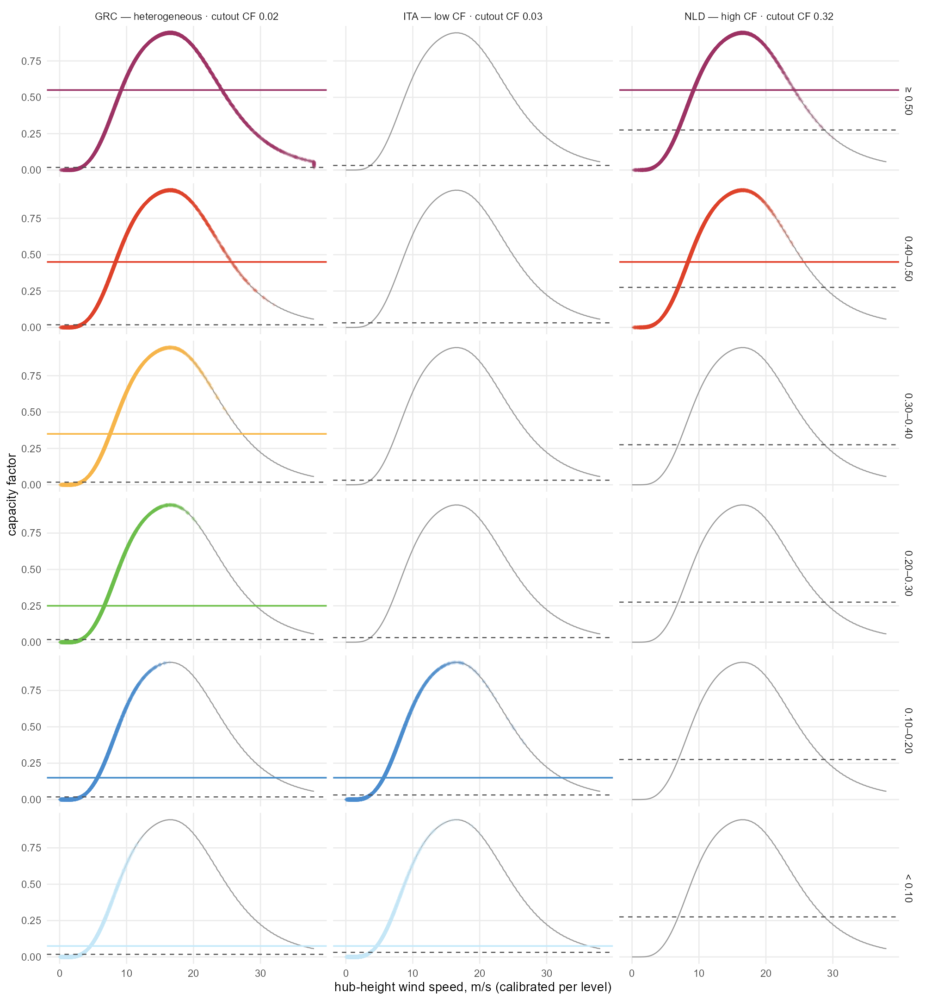
The correction per tier-aligned level on the same three cells (columns) — each row one 0.10-wide level (top open-ended), diamonds are the 8760 calibrated hours on the aggregate power curve, the solid line the level’s mean CF in its colour, the dashed line the uncalibrated whole-cell mean from the cutout.
Choosing the threshold
The filter removes, from each cell’s potential, the share of its 250 m pixels below a capacity-factor floor. The trade-off curve is the decision evidence: capacity falls faster than yield, because what is removed is the worst land first (the quality distribution behind it is Figure).
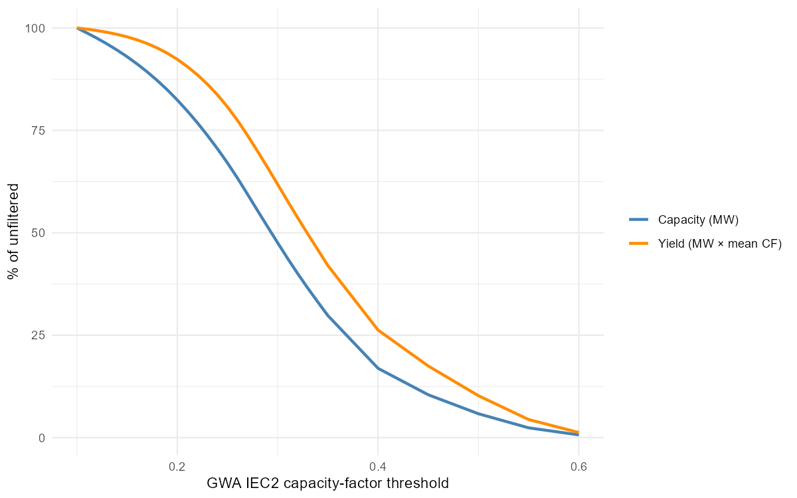
What a threshold removes, EU-wide: share of the unfiltered capacity and of the yield surviving the GWA quality floor. The chosen threshold is 0.20.
At the chosen 0.20, 21% of the eligible MW is removed but only 9% of the annual yield — 9,188 GW (after the coverage derate) becomes 7,210 GW.
Clustering
Per-cell hourly capacity factors (the same turbine assumptions as PyPSA) are clustered by profile similarity — weighted k-medoids on correlation distance, weights equal to each cell’s installable MW — and the number of clusters per group is the smallest that keeps the weighted information loss under a tolerance. The sweep below runs within NUTS1 groups:
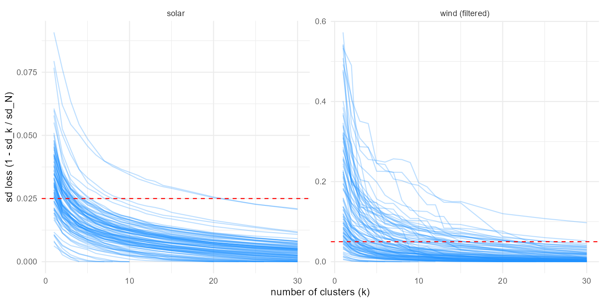
Cluster count vs weighted information loss, one line per NUTS1 group; the dashed line is each resource’s tolerance (5% wind, 2.5% solar).
Filtering helps the clustering too: at the same 5% tolerance the filtered wind layer needs 925 clusters where the unfiltered one needs 1,243, because the discarded low-wind land is also the most heterogeneous.
Technology tiers
For model use the layer is restructured around four
technology tiers (0.20–0.30, 0.30–0.40, 0.40–0.50, ≥ 0.50) with
clustering per country on the hourly shapes (each
cell’s series normalized by its mean — tiers own the level, clusters own
the shape). A cell’s shape is the same in every tier, so tiers are not a
clustering dimension but a supply-curve attribute within each
cluster: one weather shape per cluster, and per-tier level and area on
top (the merra2ools::build_cf_tiers() pattern). At the 10%
country-scale tolerance (capped at the sweep grid’s maximum — only Italy
hits the cap, at 11%), wind resolves to 287 shape
clusters carrying 1,003 locations — one
(cluster × tier) pair each, holding its own non-overlapping piece of
land. Every NUTS3 region keeps its piece of each cluster, so the stored
tables support supply curves at full regional resolution: per region,
cluster and tier, an installable MW, a mean capacity factor, and an
hourly profile.
Against the 41-node framework the difference is one of resolution, not of territory. There each region offers one blended wind generator — 41 in all; here the same land is offered as 1,025 location-node rows once the clusters are mapped onto the nodes (a cluster that straddles a two-node country splits), about 25 generators for every one the replica carries. The capacity on offer falls at the same time, from 9,723 GW to 7,209: the coverage derate accounts for part, the 0.20 quality filter for the rest.
| Country | 41-node regions | Shape clusters | Locations | Original GW | This layer GW |
|---|---|---|---|---|---|
| AL | 1 | 5 | 19 | 69 | 24 |
| AT | 1 | 11 | 42 | 140 | 70 |
| BA | 1 | 3 | 12 | 138 | 40 |
| BE | 1 | 1 | 4 | 15 | 15 |
| BG | 1 | 9 | 25 | 143 | 50 |
| CH | 1 | 7 | 27 | 77 | 30 |
| CZ | 1 | 3 | 11 | 103 | 83 |
| DE | 1 | 6 | 23 | 490 | 417 |
| DK | 2 | 1 | 3 | 81 | 81 |
| EE | 1 | 1 | 4 | 94 | 94 |
| ES | 2 | 30 | 109 | 938 | 604 |
| FI | 1 | 4 | 15 | 683 | 681 |
| FR | 2 | 30 | 104 | 969 | 800 |
| GB | 2 | 5 | 20 | 439 | 439 |
| GR | 1 | 20 | 73 | 216 | 73 |
| HR | 1 | 5 | 15 | 78 | 23 |
| HU | 1 | 4 | 10 | 137 | 115 |
| IE | 1 | 1 | 3 | 142 | 142 |
| IT | 2 | 50 | 167 | 504 | 206 |
| LT | 1 | 1 | 4 | 129 | 126 |
| LU | 1 | 1 | 3 | 2 | 2 |
| LV | 1 | 2 | 7 | 150 | 149 |
| MD | 1 | 1 | 3 | 53 | 26 |
| ME | 1 | 2 | 8 | 38 | 16 |
| MK | 1 | 4 | 13 | 67 | 16 |
| NL | 1 | 1 | 4 | 47 | 47 |
| NO | 1 | 20 | 80 | 790 | 694 |
| PL | 1 | 5 | 20 | 420 | 408 |
| PT | 1 | 3 | 12 | 163 | 125 |
| RO | 1 | 20 | 54 | 325 | 170 |
| RS | 1 | 6 | 18 | 184 | 89 |
| SE | 1 | 8 | 32 | 942 | 894 |
| SI | 1 | 3 | 11 | 29 | 7 |
| SK | 1 | 4 | 14 | 52 | 25 |
| UA | 1 | 8 | 26 | 851 | 419 |
| XK | 1 | 2 | 8 | 26 | 10 |
| Total | 41 | 287 | 1,003 | 9,723 | 7,209 |
Whether the tiers earn their place is an empirical question: if a solve took each band in the same proportion, the structure would be decoration. It does not. Solved at 2050 with a zero carbon cap, the model builds 810 GW of the 7,209 on offer — 11% — but takes it from the top of the supply curve, 45% of the best band against 3% of the worst.
| Tier | Locations | Max GW | Built GW | % of tier built | % of build |
|---|---|---|---|---|---|
| 0.20-0.30 | 285 | 3,049 | 86 | 2.8 | 10.6 |
| 0.30-0.40 | 285 | 2,680 | 218 | 8.1 | 26.9 |
| 0.40-0.50 | 262 | 970 | 275 | 28.3 | 33.9 |
| >= 0.50 | 171 | 511 | 231 | 45.3 | 28.6 |
Clusters behave the opposite way, and that is the layer’s second point. A tier is a price step, so the model works down it; a cluster is a shape, and shapes are complements rather than substitutes. Of the 28 countries holding more than one cluster, 19 build into their second-best cluster while the best one is still under 95% used, and only two exhaust the best one first. Use falls off gently with rank — 18% of the best cluster’s capacity, 12% of the second, about 10% through the fifth — where a pure quality ranking would predict a cliff. The system is paying for diversity of timing, which one blended profile per region cannot offer at any price.
| Cluster rank | Countries | Max GW | Built GW | % of rank built |
|---|---|---|---|---|
| 1 | 36 | 1,350 | 247 | 18.3 |
| 2 | 28 | 911 | 113 | 12.4 |
| 3 | 25 | 895 | 95 | 10.6 |
| 4 | 21 | 772 | 78 | 10.1 |
| 5 | 17 | 610 | 72 | 11.9 |
| 6 | 13 | 415 | 24 | 5.8 |
| 7 | 11 | 302 | 29 | 9.5 |
| 8 | 10 | 263 | 9 | 3.4 |
That is the layer as the model receives it. Its unit of supply is a location: one (cluster × tier) pair, holding its own piece of land at its own capacity factor. The pairs do not overlap — within a country their areas sum to their union — so a location is a real place rather than an accounting category, and a country offers as many as its clusters have tiers. Italy carries 167 of them, Spain 109, Belgium four.
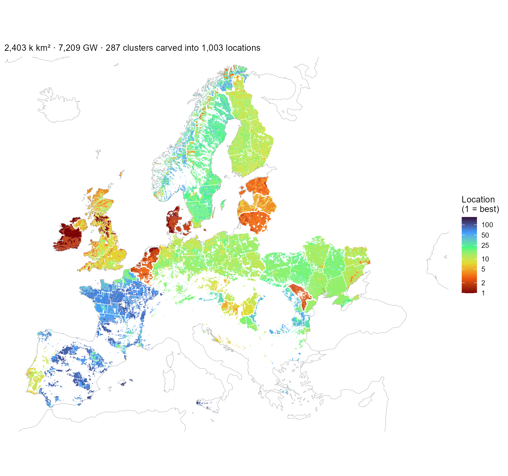
The wind layer as the model receives it: every installable piece coloured by its location number — the (cluster × tier) pair’s rank within its country, best first — with white cluster boundaries on top. One location is one colour inside one outline. Ireland, Denmark and the Netherlands are nearly all top-ranked land; France and Iberia carry many lower-ranked locations. The scale is logarithmic because Italy alone holds 167.
The resulting resource maps
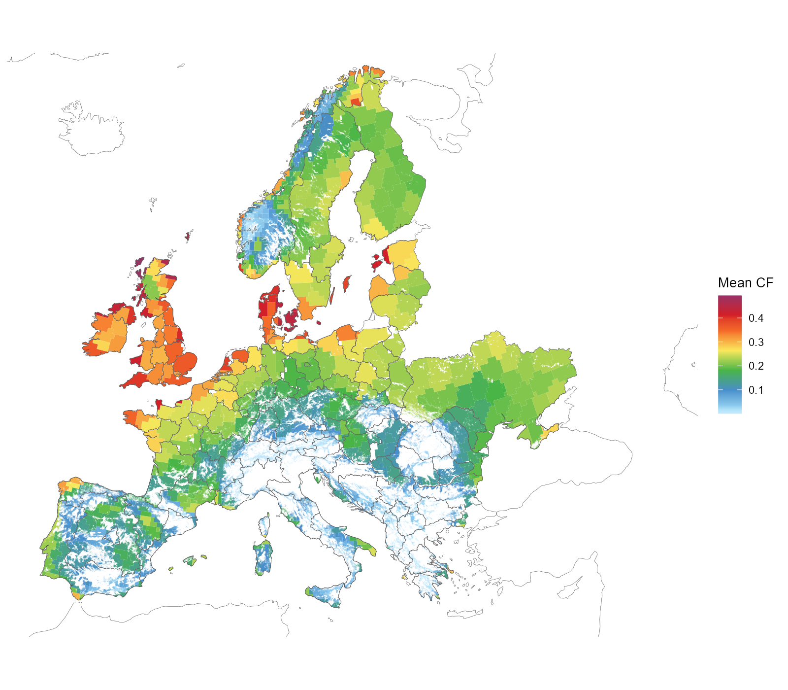
Onshore wind clusters on the installable area — cell × NUTS1 region × GWA ≥ 0.20 band — coloured by each cluster’s MW-weighted mean capacity factor.
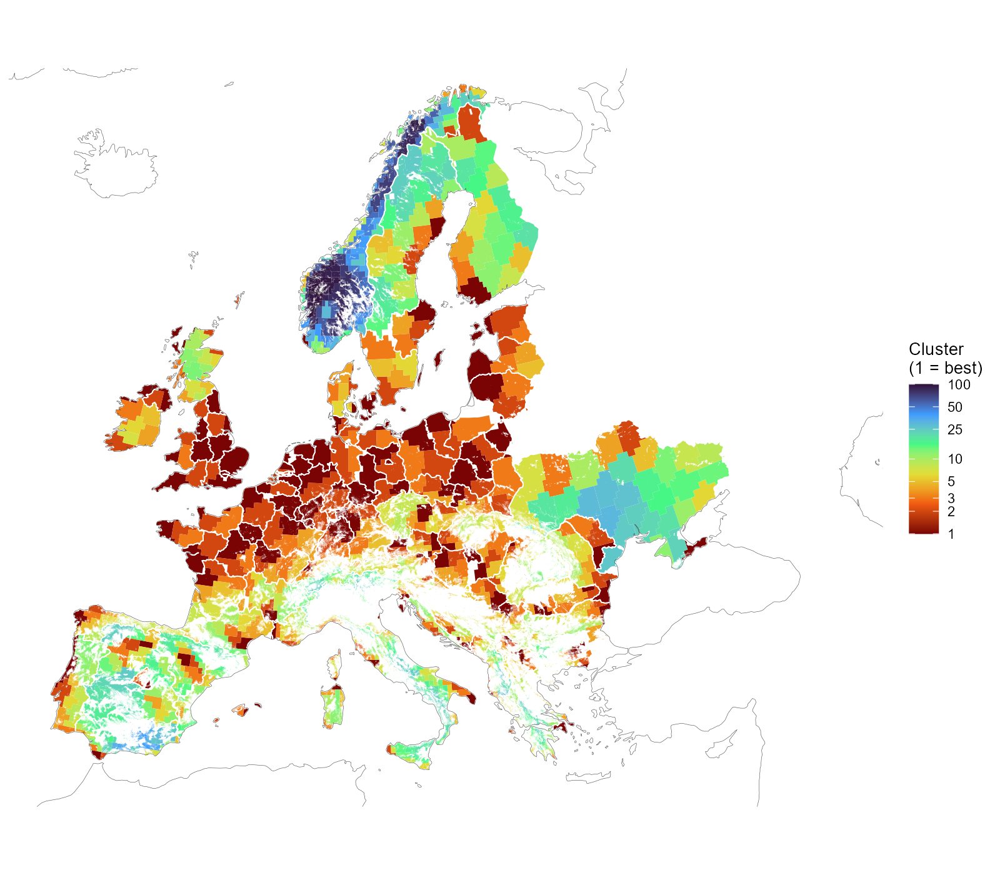
Wind clusters on the installable area, white NUTS1 borders on top. Numbering runs best first within each group — cluster 1 holds the group’s highest mean capacity factor — so the colour reads as resource rank, not as an arbitrary label. The scale is logarithmic: three quarters of the groups hold ten clusters or fewer, and a linear ramp would spend a tenth of its colours on them.